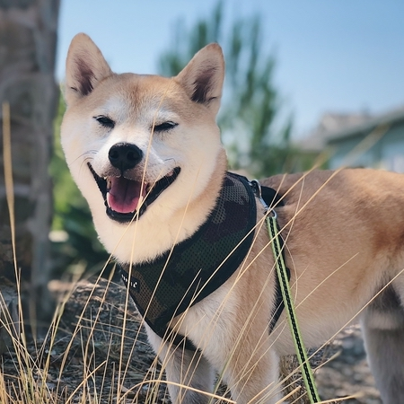
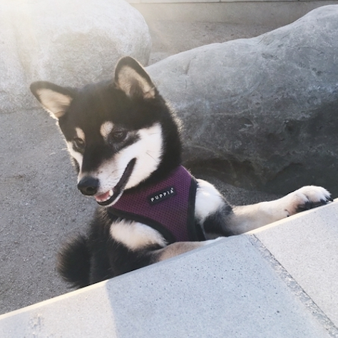

- 
This is my dog Tomi, he was born on Aug 2011, his breed is not that common yet in the States but is a Japanese breed called Shiba Inu. People often mislead him as a fox!
- 
This is my dog Mika, she was born on Aug 2014, Mika is the same breed as Tomi, but a different color. People often mislead her as a husky puppy! But in fact she is already full grown.
-
although Mika joined the family after Tomi and she is 3 years younger, but as a strong indepentdent women, she is always the leader in the house.